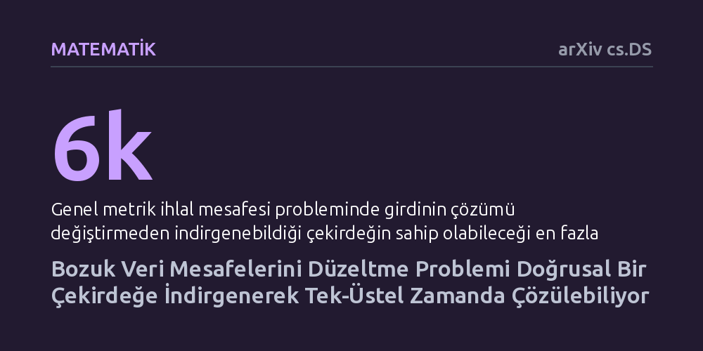

MATEMATIK · arXiv cs.DS · 2026-10-08
Çalışma, gürültülü verilerdeki bozuk mesafe ölçümlerini en az değişiklikle geçerli bir metriğe dönüştürme probleminin kuramsal sınırlarını araştırıyor. Yazarlar, problemin en fazla 6k düğümlük doğrusal bir çekirdeğe indirgenebildiğini ve tek-üstel zamanda en uygun şekilde çözülebileceğini kanıtlıyor.
Gürültülü verilerdeki mesafe tutarsızlıklarını düzeltmenin aşırı yavaş olduğu düşüncesini yıkarak, büyük veri kümelerinin küçük çekirdeklere kayıpsız sıkıştırılıp hızla onarılabileceğini gösteriyor.

Günlük yaşamda ve veri biliminde mesafelerin belirli geometrik kurallara uymasını bekleriz. Bu kuralların en temeli üçgen eşitsizliğidir: A noktasından B'ye, oradan da C'ye giden yol, A'dan C'ye doğrudan giden yoldan daha kısa olamaz. Ancak biyolojide gen dizilimleri karşılaştırılırken, sosyal ağlarda benzerlikler hesaplanırken ya da sensör ölçümlerinde gürültü olduğunda bu kural sıkça çiğnenir. Eldeki veride A ile B birbirine çok yakın, B ile C çok yakın, fakat A ile C anlamsız biçimde çok uzak görünebilir.
İşte "Metrik İhlal Mesafesi" problemi bu tutarsızlığı gidermek için ortaya atılmıştır. Amaç, birbirini tutmayan mesafe matrisinde en fazla k adet sayıyı değiştirerek tüm veriyi geçerli bir metrik uzaya dönüştürmektir. Bu işlem, makine öğrenmesi ve veri analitiği algoritmalarının gürültülü veriler üzerinde saçmalamadan çalışabilmesi için kritik bir ön temizlik adımıdır. Ne var ki hangi mesafelerin değiştirileceğini bulmak olası kombinasyonların çokluğu yüzünden son derece zor bir hesaplama yükü doğurur.
Klasik bilgisayar biliminde bu tip problemler en zor sınıfa girer; veri boyutu büyüdükçe kesin çözümü bulmak imkânsız hale gelir. Araştırmacılar bu engeli aşmak için parametreli karmaşıklık yaklaşımını kullanır. Buradaki temel fikir, algoritmanın zorluğunu tüm veri boyutuna göre değil, sadece düzeltilmesi gereken hata sayısı olan k parametresine göre ölçmektir. Veri kümesi devasa olsa bile düzeltilecek nokta sayısı azsa problem kabul edilebilir sürelerde çözülebilir.
Daha önceki çalışmalar, metrik uzayın çok kısıtlı özel halleri için çözümler üretmiş, ancak genel metrikler için tek-üstel sürede çalışan bir algoritmanın ve veri boyutunu budayan polinom çekirdeğin var olup olmadığını açık bir soru olarak bırakmıştı. Yazarlar bu soruları yanıtlamak için girdideki tutarlı ve gereksiz noktaları ayıklayıp problemi doğrudan hataların etrafında toplayan yeni bir çekirdekleştirme yöntemi kurguladı.
Çalışmanın ilk somut bulgusu, genel metrik onarım probleminin en fazla 6k düğüm içeren doğrusal bir çekirdeğe indirgenebilmesidir. Yani elinizde milyonlarca veri noktası bulunsa bile, eğer düzeltmeniz gereken mesafe sayısı k ise, çözümü hiç bozmadan tüm veri kümesini en fazla 6k noktadan oluşan küçük bir çekirdeğe sıkıştırabiliyorsunuz. Bu çekirdek, yaklaşık çözüm algoritmalarının öncesinde çalıştırıldığında ek bir hesaplama yükü getirmeden çözüm kalitesini kayda değer biçimde artırıyor.
İkinci olarak yazarlar, problemin tek-üstel zamanda çözülebileceğini matematiksel olarak ispatladı. Bununla da kalmayıp, Üstel Zaman Hipotezi geçerli olduğu sürece, tüm girdi mesafeleri yalnızca 1, 2 ve 3 değerlerinden ibaret olsa dahi bundan daha hızlı bir algoritmanın var olamayacağını kanıtlayarak teorik alt ve üst sınırları kilitlediler. Kenar mesafelerine belirli aralıklar tanımlanan genelleştirilmiş problemde ise çekirdek boyutu 7k olarak belirlendi. Ayrıca biyolojideki soy ağacı modellerinde kullanılan ağaç metriği onarımının da sabit parametreyle yönetilebilir olduğu gösterildi.
Elde edilen sonuçlar, gürültülü mesafe verilerini onarmanın matematiksel sınırlarını netleştiriyor. Artık genel metrik onarımı için daha hızlı bir tek-üstel algoritma arayışının kuramsal olarak sonuçsuz kalacağı biliniyor; çünkü yazarlar sınırın en dip noktasını gösterdi. Buna karşılık bulunan 6k boyutundaki doğrusal çekirdek, büyük veri setlerini işleyen algoritma tasarımcıları için güçlü bir veri sadeleştirme reçetesi sunuyor.
Yine de bu sonuçların tamamen soyut matematiksel ispat düzeyinde olduğunu ve algoritmaların gerçek dünya veri setleri üzerinde pratik olarak denenmediğini akılda tutmak gerekir. Hata sayısı k büyüdükçe üstel karmaşıklık kaçınılmaz olarak işlem süresini artıracaktır. Buna rağmen çalışma, verilerdeki geometrik bozuklukları gidermenin kuramsal temellerini sağlam bir zemine oturtmaktadır.